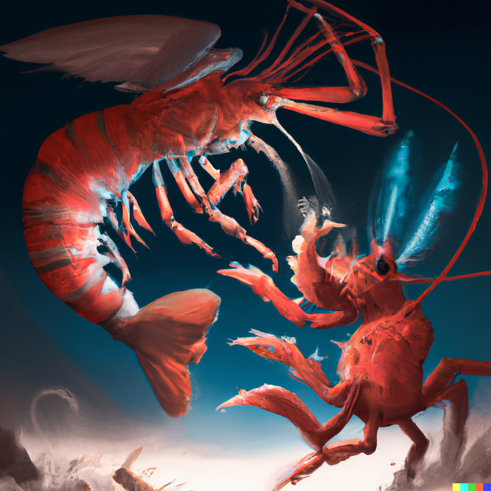

First there was nothing...
...Then there were Shrim
THE SHRIM: Shrim are the primordial spirits of the old void world. They created the stars, the sky, the ocean, all was good. All was perfect.
Xothgorz, The Shrim-King of the Abyssal Depths.: The greatest of these shrim was known as Xothgorz, he was kind and merciful, and created man to swim the ocean world of his creation. In those days mankind lived underwater, and enjoyed life and lived in peace with one another.
THE ANTI SHRIM-DEMONS: But then, lesser crustaceans (the word is banned in shrimology, but I will share it here for the unitiated to learn crabs... UGH!) grew jealous of the Shrim-King and created land to force mortals to live upon in suffering and pain to spite the shrim-king. Many anti-shrim demons take human form, for example, Greg from Greg's New Cars is an evil anti-shrim demon pretending to be a human and torments our loyal member Mike daily.
THE SHRIMP: But all was not lost! For the shrim-king created shrimp, which are rich in shrimtanium to allow mortal men to recharge their natural crustacean divinity! Praise be the shrim-king!
SUPREME-SHRIMSTER RU-HOYA "LARRY" BIMBI: Our great leader, beloved by the shrim-king, was granted after many years of meditation and consumption of shrimp the ability to commune with shrimp and shrim, he alone has the power to save us, which he gladly does for only a low monetary price. He deserves it.
